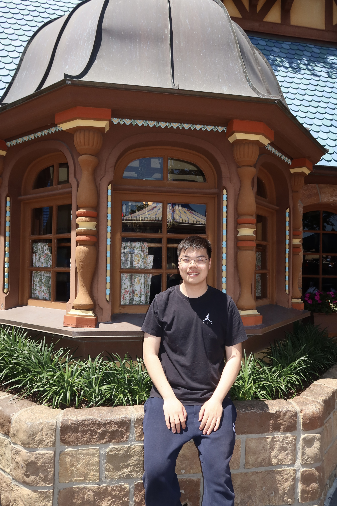
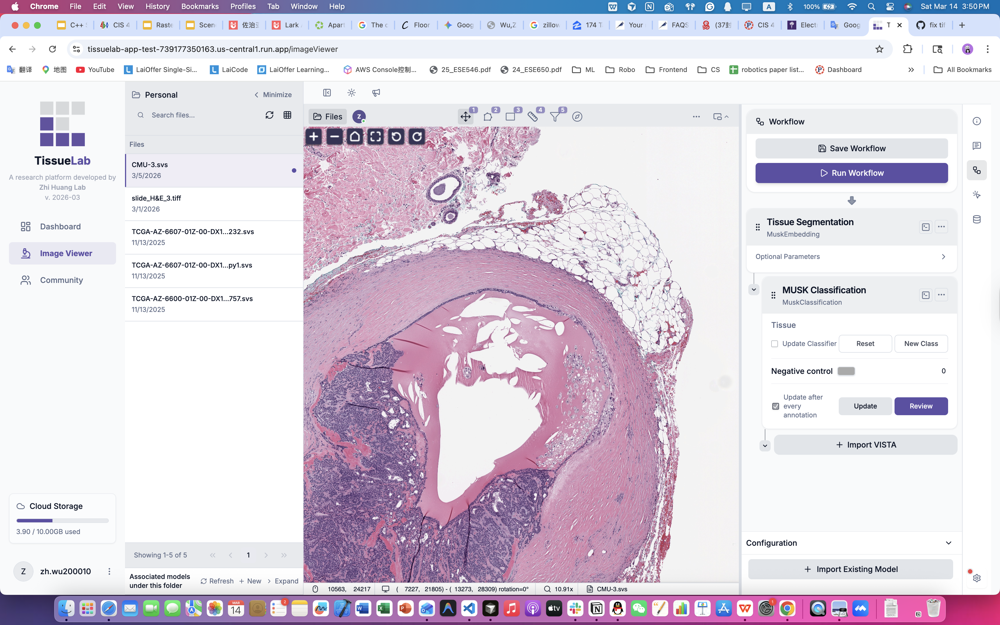
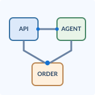
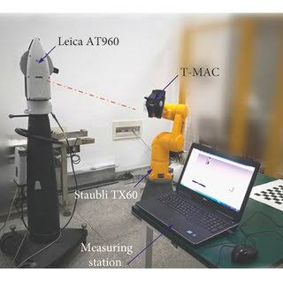

|
Zehua Wu 吴泽华 zh.wu200010 [at] gmail [dot] com / wuzehua15 [at] 163 [dot] com I received my M.S.E. in Electrical Engineering from the University of Pennsylvania in 2026. My interests lie in software engineering, applied AI, and robotics, particularly in turning research ideas into reliable real-world systems.
At the
Zhi Huang Lab
at Penn Medicine, I contributed to the development of
TissueLab
(
Previouly, I received my B.Eng. in Automation from Southeast University Chengxian Colllege. I was a research assistant advised by Prof. Guifang Qiao from Nov. 2023 to Jun. 2024, working in the field of industrial robot calibration. |
 |

Experience |
|
Google — Software Engineering Intern
| Jun. 2025 – Aug. 2025
Offline-First Multimodal Retrieval System During my internship at Google, I worked on an offline-first multimodal search system for local documents and images. I developed components for document parsing, incremental indexing, on-device BERT/MobileCLIP inference, and hybrid keyword-vector retrieval. The system supported over 10K documents across five formats, achieving 85% Recall@10 and P95 retrieval latency below 300 ms. I also applied INT8 quantization to reduce model memory usage by 67%. |
Selected Projects & ResearchMy work spans machine learning systems, full-stack engineering, medical imaging, and robot calibration. |
|
 |
TissueLab — Agentic AI Platform for Digital Pathology
Penn Medicine · Zhi Huang Lab · Research Software Developer Dec. 2025 – Jun. 2026 website / code
Python · FastAPI · pyvips · OpenSeadragon · GCP · Docker · CI/CD |
|
 |
OnlineOrder — Full-Stack Ordering Platform
with AI Agent
Personal Software Project Jan. 2025 – Apr. 2025 GitHub
Java · Spring Boot · FastAPI · PostgreSQL · Redis · Kafka · Docker · LLM Tool Calling |
|
 |
Industrial Robot Kinematic Calibration and
Error Compensation
NSFC-Funded Research Project (Grant No. 51905258) Nov. 2023 – Jun. 2024
MATLAB · Python · Robot Kinematics · Parameter Identification · Optimization · MLP |
Publications & Patent |
|
Research on Robot Parameter Identification Based on
Black-winged Kite Optimization Algorithm IAENG International Journal of Computer Science, 2025. |
|
Compensation of Industrial Robot Positioning Accuracy
Based on Multi-layer Perceptron Instrument Technique & Sensor, 2025. |
|
Robot Geometry Parameter Identification Method Based on
Multi-Objective Differential Evolution Algorithm China Measurement & Test, 2024. |
|
A Multi-Model Detection Method and System for Intelligent
Transportation Patent publication No. CN116311100A, 2023. |